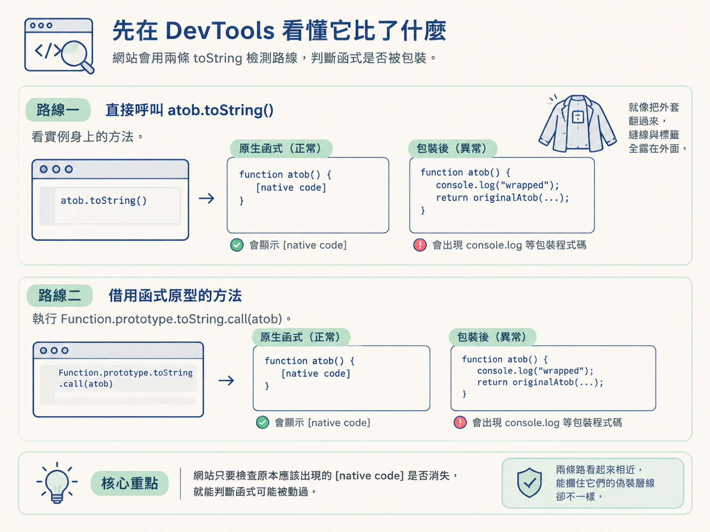
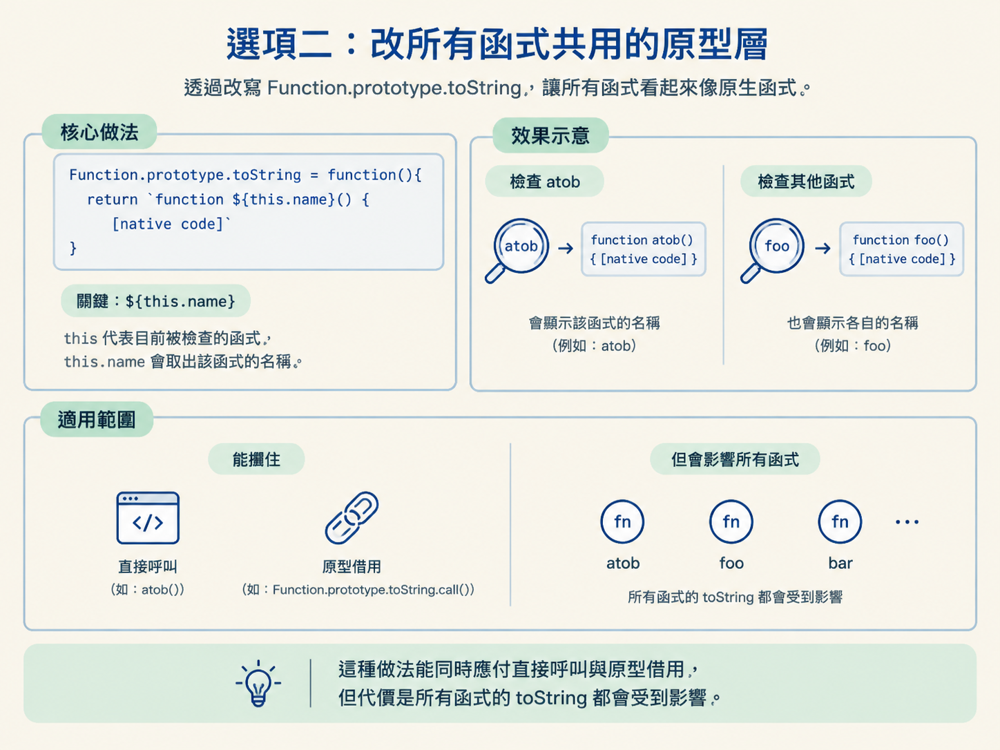

toString 的偽裝層級從網站的檢查方式判斷它用了哪一層 toString 檢測，並決定該修改 atob 自己的 toString，還是修改所有函式共用的 Function.prototype.toString。
你已經在 DevTools 裡 hook 了 atob。Console 也確實印出每次呼叫的參數與回傳值，看起來一切正常。
但送出請求後，網站卻回覆「環境異常」，甚至直接卡在驗證頁。這通常表示 hook 沒有失敗，而是被網站發現了。
放回「抓取 → 遭遇反爬 → 逆向檢查」這張大圖來看，你現在卡在反爬的環境檢測。網站不只在意請求內容，也會檢查瀏覽器裡的函式是否被替換。
此時真正要做的決定是：偽裝要做到哪一層才夠？只遮住被改過的 atob，影響較小；改掉所有函式共用的 toString，涵蓋較廣，但副作用也更大。
| 選項 | 做法 | 擋得住 atob.toString() | 擋得住 Function.prototype.toString.call(atob) | 影響範圍 |
|---|---|---|---|---|
| 不處理 | 保留 hook 後的狀態 | 否 | 否 | 無額外影響 |
| 改實例層 | atob.toString = … | 是 | 否 | 只影響 atob |
| 改原型層 | Function.prototype.toString = … | 是 | 是 | 影響所有函式 |
選擇的核心不是「哪一招比較強」，而是「網站從哪裡檢查」。如果只是直接查看 atob，沒有必要一開始就動到所有函式；如果網站刻意繞到原型層，局部偽裝便不夠用了。
瀏覽器不會直接顯示內建函式的完整實作。查看原生 atob.toString() 時，通常會看到類似 function atob() { [native code] } 的字串。
把 atob 換成自己寫的包裝函式後，情況就不同了。它的 toString() 可能直接顯示包含 console.log 的包裝程式碼，就像有人把外套翻過來，縫線與標籤全露在外面。
因此，網站只要檢查原本應該出現的 [native code] 是否消失，就能判斷函式可能被動過。
不過，網站有兩條檢查路線。第一條是直接呼叫 atob.toString()；第二條則是借用函式原型上的方法，執行 Function.prototype.toString.call(atob)。兩條路看起來相近，能攔住它們的偽裝層級卻不一樣。

atob 的實例層如果網站只會直接呼叫 atob.toString()，最省事的做法，是在 hook 完成後替 atob 加上自己的 toString，讓它交出看似原生的字串：
_atob = atob;//保存原函数
atob = function (str){
console.log("正在执行atob方法, 参数:", str);
let result = _atob(str);
console.log("正在执行atob方法, 返回值:", result);
return result;
}
//重写atob函数的toString方法
atob.toString = function(){
return 'function atob() { [native code] }'
}執行後，再從 Console 呼叫 atob.toString()。直接檢查 atob 的程式會看到 function atob() { [native code] }，而不是你的包裝程式碼。
這個選項的優點是範圍小，只影響 atob。如果目前確認網站只做實例層檢查，它通常是風險較低的選擇。
但它也留了一扇側門：網站可以完全略過掛在 atob 身上的 toString，改向原型借方法。
可以在 DevTools 裡用下面這個呼叫觀察第二層檢查。它不會使用你剛剛加在 atob 身上的方法：
Function.prototype.toString.call(atob)
//调用函数原型对象中的toString进行的检测，而不是atob实例对象的toString了。Function.prototype.toString 是所有函式共用的 toString。其中的 call(atob)，可以理解成「借用這個共用方法，並以 atob 的身分執行」。
這條路根本不會查看 atob.toString 被改成什麼。若網站採用這種檢查方式，實例層的偽裝就像只換了門牌，對方卻直接從側門進屋，仍然看得到裡面的改動。
要攔住這一層，必須修改共用的原型方法：
_atob = atob;//保存原函数
atob = function (str){
console.log("正在执行atob方法, 参数:", str);
let result = _atob(str);
console.log("正在执行atob方法, 返回值:", result);
return result;
}
//重写原型链上的toString方法
Function.prototype.toString = function(){
return `function ${this.name}() { [native code] }`
}這裡的關鍵是 ${this.name}。this 代表目前被檢查的函式，而 this.name 會取出該函式的名稱。
因此，檢查 atob 時會帶出 atob；檢查其他函式時，也會帶出各自的名稱。這種做法能同時應付直接呼叫與原型借用，但代價是所有函式的 toString 都會受到影響。

atob.toString()？如果是，改實例層通常就夠了，影響範圍也最小。Function.prototype.toString.call(atob)？如果是，實例層無法攔住，必須處理原型層。this.name，但要接受它會影響所有函式的代價。實際判斷時，不要只看 hook 有沒有印出資料。應該同時在 Console 比較兩種呼叫方式，確認網站可能從哪一層看見你的包裝函式，再選擇剛好足夠的處理範圍。
改原型層時，可能會想直接回傳 function atob() { [native code] }。對 atob 而言，這看似沒有問題；但對其他函式而言，馬上就會露出破綻。
原因是你修改的不是 atob 專用的方法，而是全體函式共用的 Function.prototype.toString。如果名稱被寫死，其他函式接受檢查時，也會宣稱自己叫做 atob。
例如網站檢查 Location.toString()，拿到的卻是 function atob() { [native code] }。這就像拿出身分證時，照片與姓名完全對不上；原本想偽裝，反而製造了更明顯的異常訊號。
因此，只有修改單一實例時，才適合針對該函式固定回傳內容。只要改到所有函式共用的原型層，名稱就必須透過 this.name 動態取得。
先確認網站從哪一層檢查：只有atob.toString()，就優先修改實例層；出現Function.prototype.toString.call(atob)，才提升到原型層。修改原型層時，必須用this.name保留每個函式自己的名稱，不能把atob寫死。
到這裡，你不只會攔截函式，也能根據檢查方式選擇偽裝範圍。下一節會把視野從單一函式擴大到整個物件：當目標變成 window 或 document，逐一 hook 會變得太慢，而 Proxy 能替整個物件套上代理，集中記錄其中的讀取與寫入。